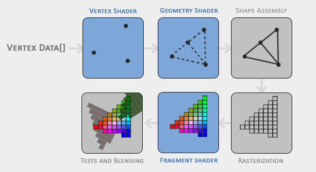

Learn OpenGL 3
Draw a triangle.
- VBO: Vertex Buffer Object
- VAO: Vertex Array Object
- EBO: Element Buffer Object
- Shader
Github source code: link
learning materials: learnopengl
Graphic Pipeline
The graphic pipeline is eseentially a process of transforming 3D coordinates to 2D pixels. This process can be further divided into two parts: 3D coordinates to 2D coordinates on screen and 2D coordinates to colored pixels. The figure below shows complete steps to convert vertex data to rendered pixels. Each step requires the output of the previous step as its input. All these steps are highly specialized and can be executed in parallel. Modern GPUs have many process cores (threads), which could process data quickly. To achieve parallelisim, each processing core runs small program. These small programs are called shaders.
- Vertex shader: transform 3D coordinates into different 3D coordinates.
- Geometry shader: form a primitive and has the ability to generate other shapes by emitting new vertices to form new (or other) primitive(s).
- Shape assembly: form one or more primitives and assembles all the point(s) in the primitive shape given.
- Rasterization: maps the resulting primitive(s) to the corresponding pixels on the final screen, resulting in fragments for the fragment shader to use.
- Fragment shader: calculate the final color of a pixel and this is usually the stage where all the advanced OpenGL effects occur.
- Test and blending: checks the corresponding depth (and stencil) value of the fragment and uses those to check if the resulting fragment is in front or behind other objects and should be discarded accordingly
In modern OpenGL, we need to implement our own vertex shader and fragment shader (no defualt on GPUs).

Coordinate
In OpenGL, a position contains (x, y, z) information. OpenGL only processes 3D coordinates within the range from [-1, 1], which are called normalized device coordinates. Anything else will be invisible on the screen.
VBO
Vertex buffer object is used to store a large number of vertices in GPU memory. The purpose of VBO is that we can send large batches of data all at once to GPU, without having to send one vertex at a time.
1 | unsigned int VBO; |
VAO
Vertex array object can be bound to one/multiple VBOs. After the binding of VAO, any subsequent vertex attribute calls from that point on will be stored inside the VAO. Whenever we want to draw something, we just bind the VAO, which makes the switching between different vertex data and configuration much easier.
1 | unsigned int VAO; |
EBO
Element buffer object stores indices that OpenGL uses to decide what vertices to draw. By doing that, we can address the problem where we have multiple triangles that have overlap vertexes. Let’s take a look at one example.
1 | float vertices[] = { |
However, duplicate vertexes are not necessary. We can further simplify it as:
1 | float vertices[] = { |
Similar to VBO, EBO can be used as follows:
1 | unsigned int EBO; |
Put everything together
The program draws two triangles side by side. One is green and another is blue. F1 controls the draw mode.
1 |
|
References
Learn OpenGL 3